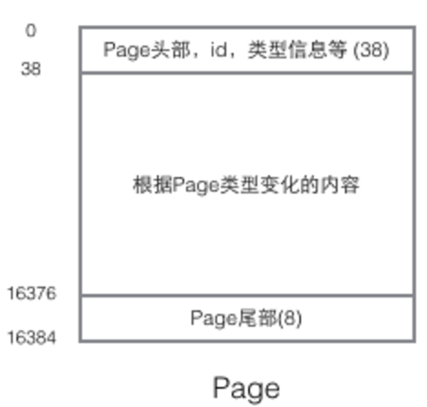

基础结构
Page是Innodb存储的最基本结构，也是Innodb磁盘管理的最小单位，与数据库相关的所有内容都存储在Page结构里。Page分为几种类型：数据页（B-Tree Node），Undo页（Undo Log Page），系统页（System Page），事务数据页（Transaction System Page）等；每个数据页的大小为16kb，每个Page使用一个32位（一位表示的就是0或1）的int值来表示，正好对应Innodb最大64TB的存储容量(16kb * 2^32=64tib)
一个Page的基本结构如下：

头部数据
每个page都有通用的头和尾，但是中部的内容根据page的类型不同而发生变化，头部的数据如下：

page头部保存了两个指针，分别指向前一个Page和后一个Page，头部还有Page的类型信息和用来唯一标识Page的编号。根据这个指针分布可以想象到Page链接起来就是一个双向链表

主体数据
在Page的主体部分，主要关注数据和索引的存储，他们都位于User Records部分，User Records占据Page的大部分空间，User Records由一条条的Record组成，每条记录代表索引树上的一个节点（非叶子节点和叶子节点）；在一个单链表的内部，单链表的头尾由两条记录来表示，字符串形式的“ Infimum”代表开头，“Supremum”表示结尾；System Record 和 User Record是两个平行的段；
Innodb中存在四种不同的Record，分别是
- 主键索引树非叶子节点
- 主键索引树叶子节点
- 辅助键索引树非叶子节点
- 辅助键索引树叶子节点
这四种节点Record格式上有差异，但是内部都存储着Next指针指向下一个Record

User Record
User Record在Page内以单链表的形式存在，最初数据是按照插入的先后顺序排列的，但是随着新数据的插入和旧数据的删除，数据物理顺序发生改变，但是他们依然保持着逻辑上的先后顺序

把User Record组织形式和若干Page组织起来，就得到了稍微完整的形式：

如何定位一个Record：
- 通过根节点开始遍历一个索引的B+树，通过各层非叶子节点达到底层的叶子节点的数据页（Page），这个Page内部存放的都是叶子节点
- 在Page内部从“Infimum”节点开始遍历单链表（遍历一般会被优化），如果找到键则返回。如果遍历到了“Supremum”，说明当前Page里没有合适的键，这时借助Page页内部的next page指针，跳转到下一个page继续从“Infmum”开始逐个查找

User Record内部的数据
User Record内部存储了四种格式的数据：
- 主索引树非叶子节点（绿色）
- 子节点存储的主键里最小的值，这时B+树必须的，作用是在一个Page里定位到具体的记录的位置
- 最小的值所在的Page的编号，作用是定位到对应的Record所在的Page
- 主索引树叶子节点（黄色）
- 主键，B+树所必须的，也是数据行的一部分
- 除去主键以外的所有列，这时数据行的除去主键的其他所有列的集合
- 辅助索引树非叶子节点（蓝色）
- 子节点里存储的辅助键值里的最小值，这时B+Tree必须的，作用是在一个Page里定位到具体记录的位置
- 辅助索引树叶子节点（红色）
- 辅助索引键值，是B+树必须的
- 主键值，用来在主索引树里在做一次B+树检索来找到整条记录

整体的查找过程

简介的树形查找示意图

Page和B+树之间并没有一一对应的关系，Page只是作为一个Record的保存容器，它存在的目的是便于对磁盘空间进行批量管理